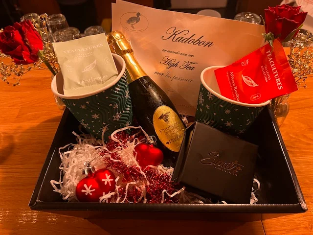
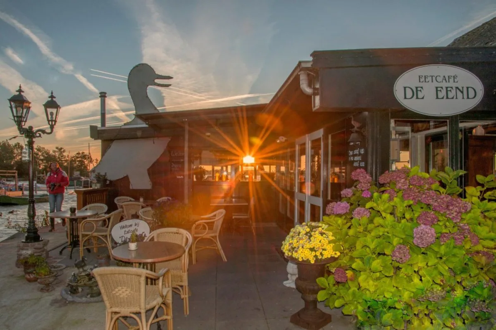
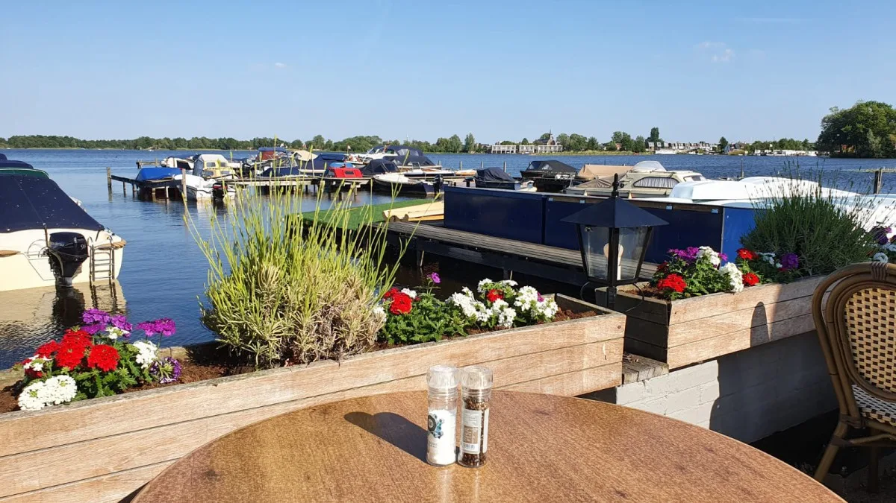
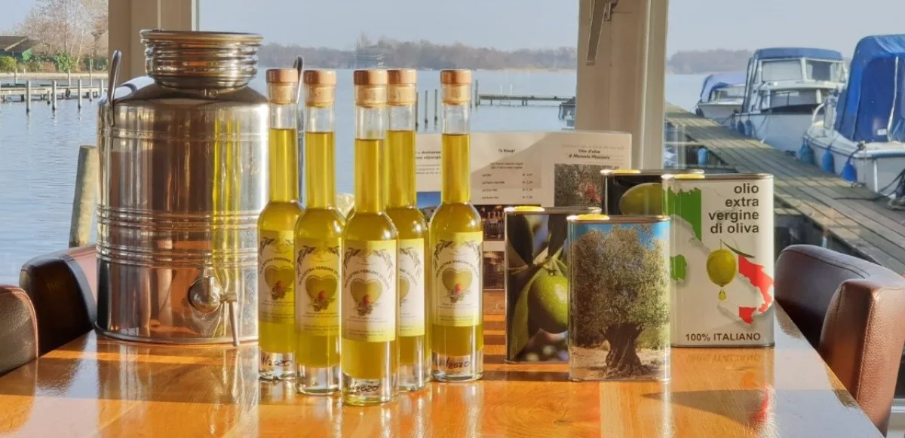
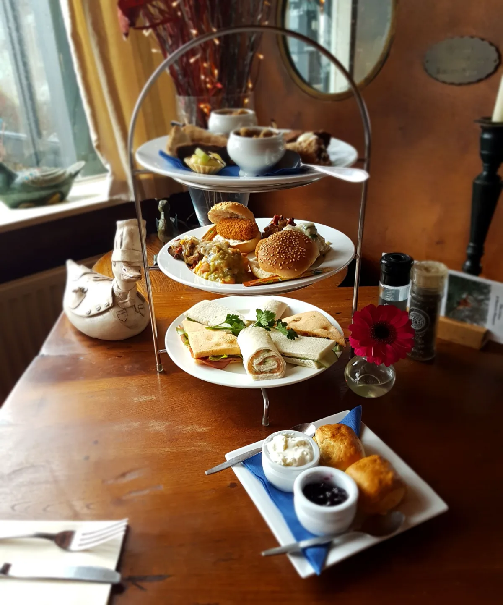
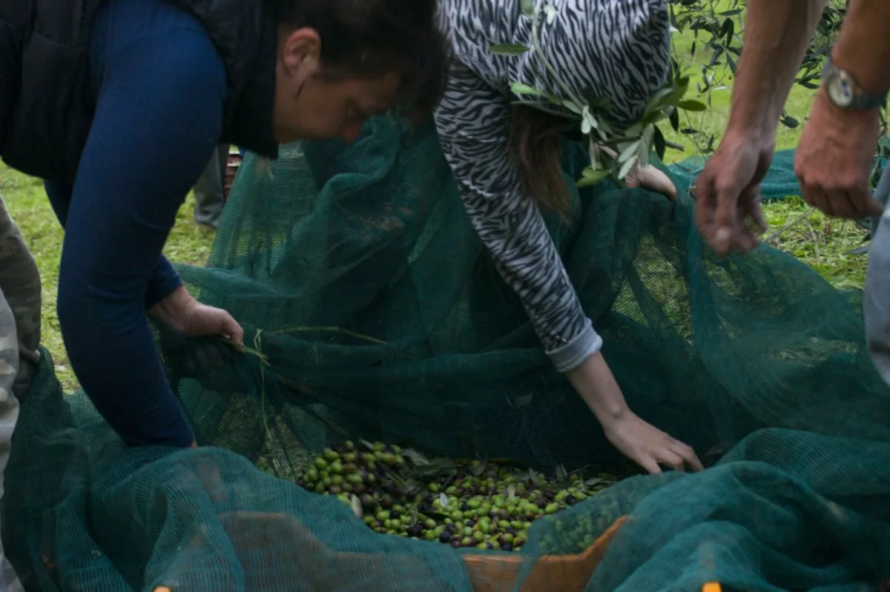
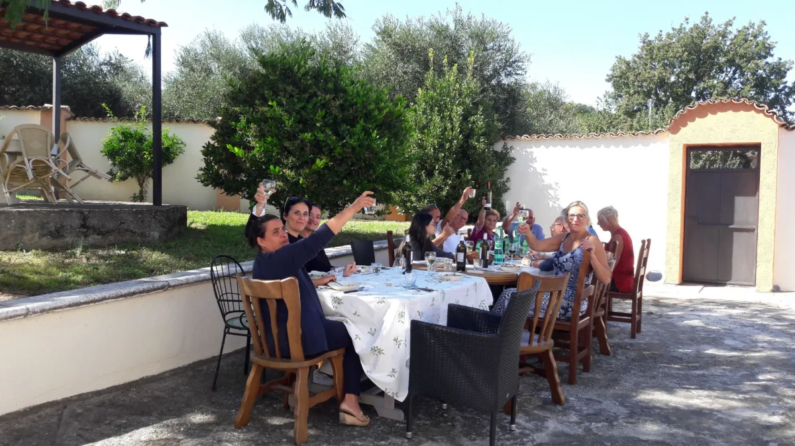
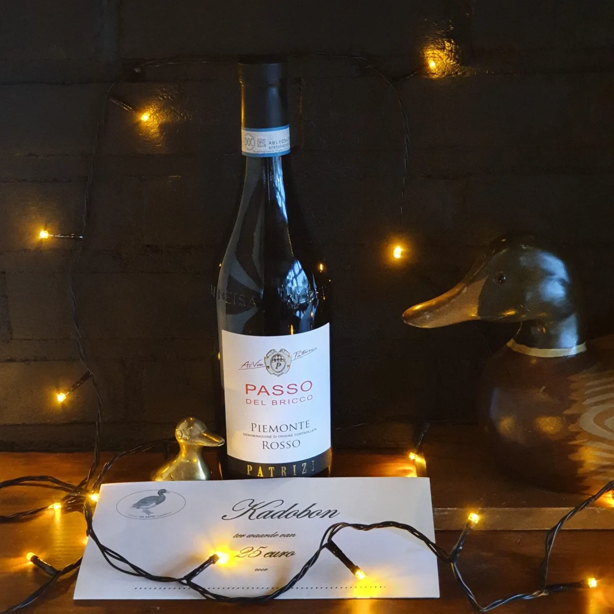

High Tea-pakket
Een kadobon voor een high tea voor 2 personen, plus een doosje ambachtelijke bonbons van Smit's Delicious.
€ 62,50

Aan de Vuntusplas, Loosdrecht
Een ongedwongen sfeer van stijlvol, klassiek met een snufje Eend. Voor uw lunch, diner of feestavond, met een grote serre en twee terrassen aan het water.
Op het moment dat u uw auto verlaat en naar De Eend toeloopt, merkt u meteen dat deze locatie anders is dan u van menig restaurant zou verwachten.
De combinatie van restaurant, zoetwatervisserij, jachthaven en bootverhuur vindt u niet zo snel. Eenmaal binnen wordt u omarmd door de warme en gastvrije sfeer van het interieur. Subtiele verlichting en romantisch kaarslicht maken dat u extra geniet.
Op de kaart vindt u veel streek- en seizoensgebonden gerechten. Wat denkt u van ambachtelijk gerookte paling, huisgemaakte roompaté of in bockbier gestoofde Angus sucade? En De Eend wordt geroemd om de bediening: zowel de bediening als de keukenbrigade heeft veel plezier in het werk, en dat merkt u.
Twee terrassen aan het water, zodat u altijd in of uit de wind en in of uit de zon zit.


Naast de lunch- en dinerkaart staan er dagspecialiteiten op ons schoolbord. Die wisselen; hiernaast ziet u wat er op 22 november op stond.
Lamsham met geroosterde walnoten, rucola en honing-mosterddressing € 14,75
Hazepeper met rode kool, verse aardappelpuree en stoofpeer € 26,50
Cheesecake met amarene kersen en yoghurtijs € 8,75
Wij zijn beide kerstdagen geopend! Eerste kerstdag vanaf 17.30 uur, tweede kerstdag al vanaf 12.00 uur. Op kerstavond zijn wij gesloten.
Prijzen per persoon. Wilt u de keuze van het hoofdgerecht vooraf doorgeven? Dan bent u verzekerd van het hoofdgerecht van uw voorkeur.
Open vanaf 12.00 uur, zonder tafellinnen. Wij serveren het kerstmenu bij de lunch én het diner, plus wat evergreens van De Eend op het schoolbord. U bestelt a la carte (de losse prijzen) of als menu, minimaal 2 gangen per gast.
Uitsluitend op reservering. Keuken open van 12.00 tot 15.00 en van 17.00 tot 22.00 uur.

Het hele jaar door kunt u tussen 12.30 en 16.00 uur genieten van een fantastisch verzorgde high tea met vele huisgemaakte lekkernijen, met uitzicht op de Loosdrechtse Plassen. Met onbeperkt diverse soorten thee.
Uitsluitend op reservering, minimaal 1 dag van tevoren: 035 - 582 55 11.
Voor grotere gezelschappen hebben wij een speciale lunch- en dinerkaart. U kiest gewoon op de middag of avond zelf. In overleg stellen wij ook een menu samen, vast of als keuzemenu, en maken we graag een menukaartje met uw eigen tekst op de voorkant, bijvoorbeeld "Diner ter gelegenheid van...".
Zakelijk uitje, bedrijfsborrel, jubileum, receptie, reünie of familiebijeenkomst? Ook dat verzorgen wij graag, in vele prijsstellingen. Bel 035 - 582 55 11 voor een persoonlijke afspraak, of mail mail@eetcafedeeend.nl (groepen vanaf 8 personen).
Italiaanse witte bol of meergranenbol, belegd met: (# = vegetarisch)
Wil het hele gezelschap uitgebreider eten? Kies dan uit de dinerkaart voor groepen hieronder.
Alle hoofdgerechten met frites, mayonaise en een huisgemaakte compote.
Voor gezelschappen van 8 personen of meer bieden wij naast de verkorte dinerkaart een 3-gangen specialiteitenmenu voor € 54,50 (alleen voor het hele gezelschap).
Gijp, huisgemaakte gevogeltepaté met mangochutney
Combi, ambachtelijk gerookte paling met Noorse gerookte zalm, rode ui, kappertjes en mierikswortelmayonaise
Pierre, kopje echte Franse uiensoep met mini kaascrouton
Surf en turf, gegrilde biefstuk van de ossenhaas met grote gamba's, gebakken in onze eigen olijfolie met knoflook, tomaat en ui, met klassieke pepersaus apart
Italian Delight, luchtige mousse van mascarpone, biscuit en koffielikeur met mokkasaus en gezouten karamelijs
Groots entree, een diversiteit van onze lekkerste voorgerechten
Scroppino, een heerlijke frisse shake van limoenijs, prosecco en limoncello
Tournedos, gegrilde biefstuk van de ossenhaas met klassieke pepersaus
Bonito, gegrilde tonijnsteak met wasabi-ponzumayonaise apart
Pekingeend, zeer knapperige, op oosterse wijze bereide eend met roergebakken taugé en hoisinsaus
Risotto burrata, tomatenrisotto met lente-uitje, Parmezaan en romige Italiaanse burrata met verse basilicumolie
Hoofdgerechten met frites en huisgemaakte compote.
Grand dessert, een parade van diverse lekkernijen
Vanaf dinsdag 17 november is de olijfolie van 2026 verkrijgbaar bij De Eend: prachtig helder groen van kleur, met de hand geplukt en binnen 24 uur geperst. Kom snel een flesje, blik of losse liter halen.
Onze olie komt uit Italië, uit de provincie Basilicata bij het stadje Senise. Ieder jaar gaan wij olijven plukken op ons landgoed Misossero. De olijfgaard is volkomen biologisch: er wordt niet gespoten en niet bemest met kunstmatige hulpstoffen.
Wij plukken vroeg, meestal in de eerste of tweede week van november, zodra de frantoia (het persfabriekje) opengaat. Olijven die nog niet helemaal rijp zijn bevatten veel polyfenolen en hebben een lage zuurgraad. Dat geeft minder olie, maar wij kiezen voor kwaliteit. Omdat we direct na het plukken persen, heeft onze extra vergine olie een zuurgraad van 0,2%.
De verse olie nuovo is eerst troebel, met een heerlijk peperige en nootachtige smaak: gebruik hem koud, met wat zout op een broodje of in salades. Later in het jaar klaart de olie en is hij ook geschikt om te bakken en braden. Bewaar hem donker, niet te warm en goed afgesloten.
Verkrijgbaar als flesje van 0,25 l, blik van 0,5 l, blik van 1 l en per liter los. Vraag naar de prijzen in het restaurant.


Je kunt alleen of met een gezelschap meehelpen bij de olijvenpluk. Je bezoekt de frantoia, volgt het hele persproces en proeft de verse olie bij het haardvuur op een bruschetta. Iedere dag eet je bij de lunch en het diner een traditionele Italiaanse maaltijd, met Italiaanse wijn.
Je betaalt zelf de reis en de helft van de huur van het huis (€ 30,00 per persoon per dag). Ontbijt, lunch en diner zijn voor de eigenaar van de olijfgaard. Aanmelden via mail@eetcafedeeend.nl of info@huishurenitalie.nl.
De Eend heeft vier vakantiewoningen te huur in Senise, met zwembad, tuin en dakterras met uitzicht over Zuid-Italië. Op Masseria Misosero kun je ook workshops volgen: Italiaans koken met Yin Yoga, Italiaanse taal en cultuur, olijven plukken, de Italiaanse boerenkeuken en schilderen.
Op zoek naar een leuk cadeau? Al onze kadobonnen zijn ook los verkrijgbaar.

Een kadobon voor een high tea voor 2 personen, plus een doosje ambachtelijke bonbons van Smit's Delicious.
€ 62,50
Een kadobon voor een luxe high tea voor 2 personen, een doosje bonbons van Smit's Delicious en een klein flesje prosecco (0,375 l).
€ 80,00

Naar keuze een Italiaanse Passo, Paparuda Pinot Grigio of Pinot Grigio blush rosé.
€ 12,50 + de waarde van de kadobon
Extra vergine olijfolie van De Eend in een flesje van 0,25 l, een blik van 0,5 l of een blik van 1 l, met een kadobon. Ook zonder kadobon een feest om te geven en te krijgen!
Prijs op aanvraag
Echt, je wordt hier nooit teleurgesteld.
Gezellig gegeten voor een nette prijs. Direct aan het water met een mooi uitzicht.
Hoogwaardige kwaliteit van elk gerecht, gezellige sfeer, goede bediening en prachtig gelegen aan het water.
Uit beoordelingen van gasten op Google.
Wij zoeken een gepassioneerde en gemotiveerde bedrijfsleider, en een enthousiaste gastheer of -vrouw die het team van De Eend komt versterken. Wij bieden een 4-daagse werkweek, een gezellig team, een meer dan goed salaris, heerlijk eten en wisselende diensten.
Interesse? Mail naar mail@eetcafedeeend.nl, dan nemen we contact met je op.
De Eend staat in de fietsrouteplanner van Nederland en België, en ligt aan de route "Breukelense landhuizen met de Loosdrechtse en Kortenhoefse Plassen".
Ligt er ijs op de plas? Dan staat De Eend klaar met koek en zopie.
Vanaf 15 oktober zijn wij op maandag en donderdag gesloten.
| Maandag | gesloten |
|---|---|
| Dinsdag | 11.00 - 23.00 |
| Woensdag | 11.00 - 23.00 |
| Donderdag | gesloten |
| Vrijdag | 11.00 - 23.00 |
| Zaterdag | 10.00 - 23.00 |
| Zondag | 10.00 - 23.00 |
De keuken is open van 12.00 tot 21.00 uur. Op feestdagen zijn wij ook op maandag en donderdag open.